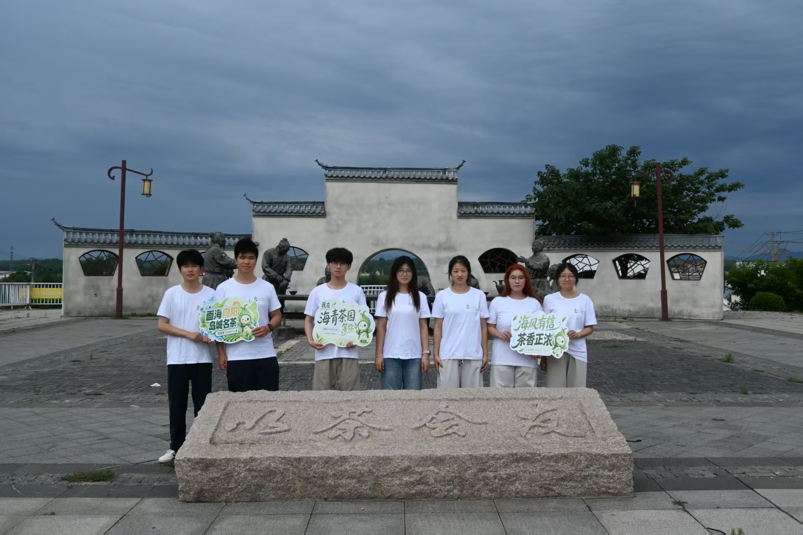

YANTAI UNIVERSITY · FIELD NOTES 2026
烟台大学 茶叙青禾 社会实践队
以青春脚步走进茶乡，
以实践力量讲好海青茶故事。
聚焦海青茶文化传播、乡村品牌助力与青年社会实践，记录一次从茶园出发的真实行动。
- 所属院校
- 烟台大学
- 实践地点
- 青岛 · 海青镇
- 行动方向
- 文化传播 / 青年助农


01 — IP形象
轮播顺序：IP形象 → 团队实践合影。
产业调研文化挖掘青年助农品牌传播
PROJECT DIRECTORY
从一个入口，
进入四组真实记录。
首页只负责说明项目与引导浏览。团队、实践、茶乡和视觉成果分别进入独立页面，避免所有信息堆在同一条长页面里。
01 / 出发认识海青茶
从地方历史和产业现状中提出问题。
02 / 调研走进真实现场
访茶园、看工艺、听企业与村庄讲述。
03 / 行动把专业带进乡村
开展茶课、传播、记录与设计实践。
04 / 转化形成青年表达
沉淀纪实、IP、文创与调研成果。



A YOUTH FIELD PROJECT
不是一次旁观，
而是一段共同完成的实践。
我们用调研理解产业，用影像保存现场，也用设计让海青茶被更多年轻人认识。每一条分支，都是这次行动留下的真实记录。
认识这支队伍 →